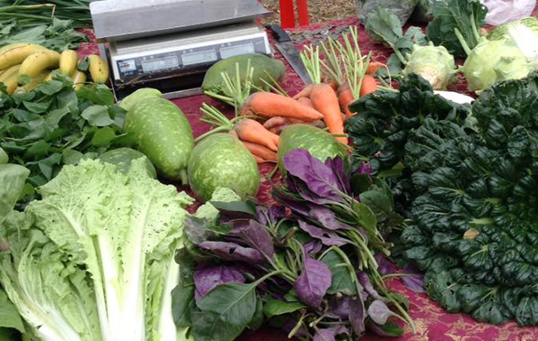
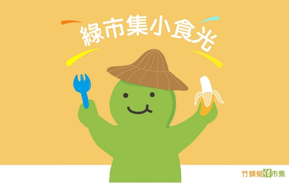
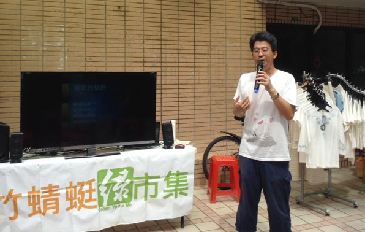
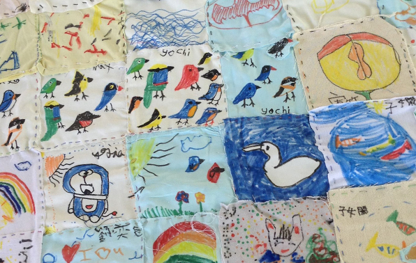
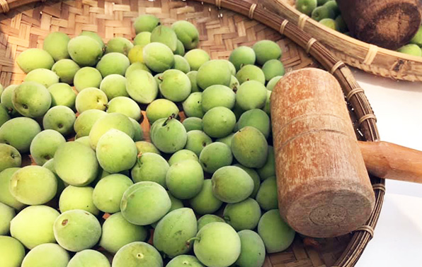
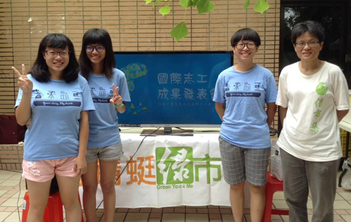
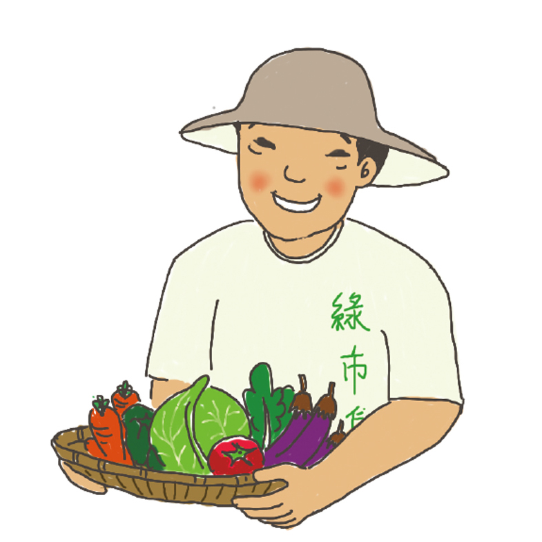
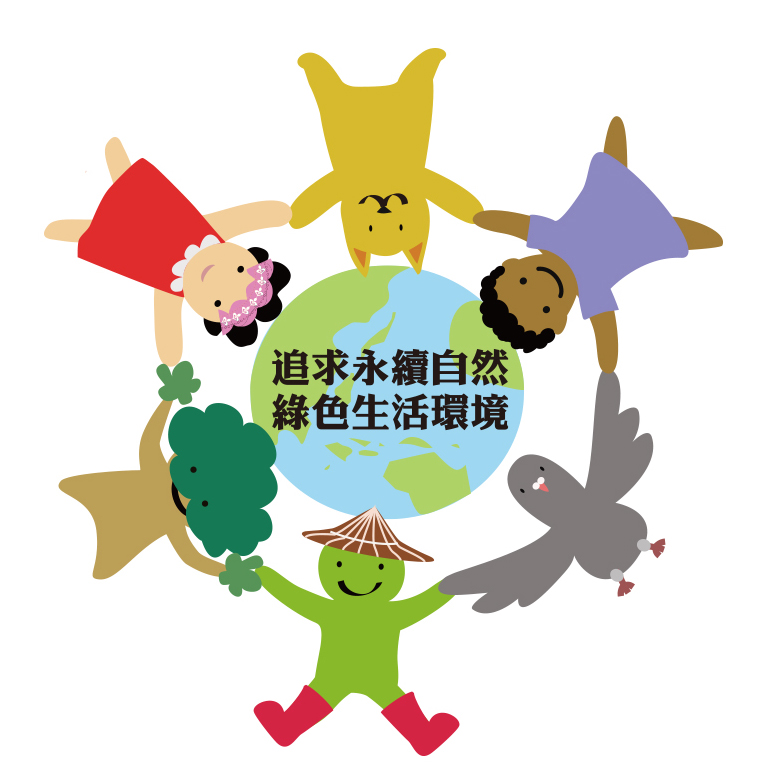
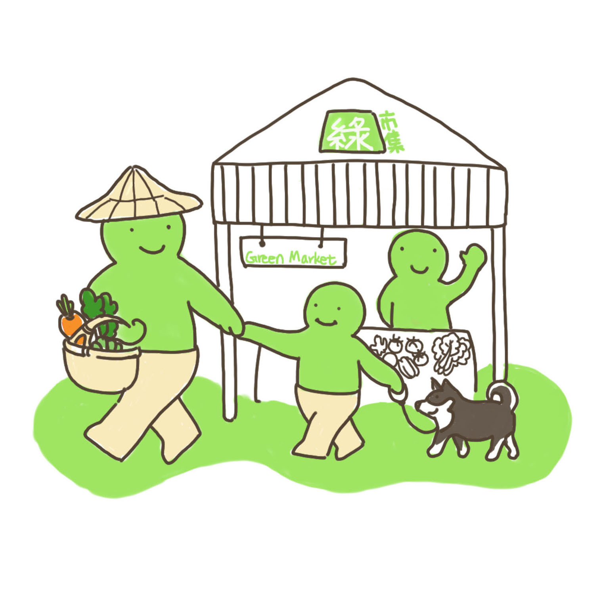
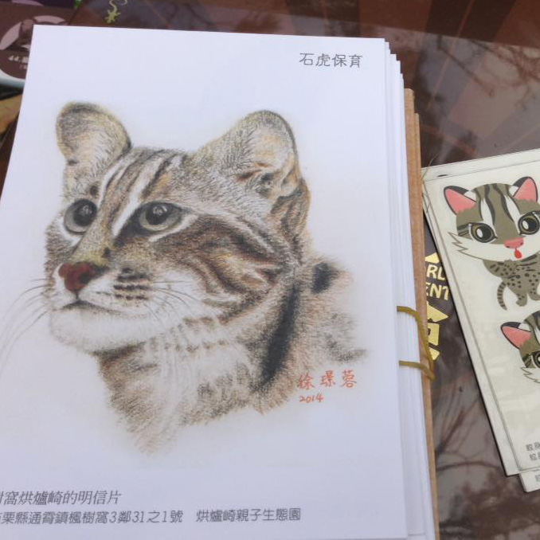

位在新竹清華大學成功湖畔的「綠市集」，同時擁有人文自然與多元豐富的環境。逛綠市集，也悠閒穿梭在校園裡，它不只是購物的市集，也是獲得友善資訊、互信分享的人文市集。
綠市集活動資訊與紀錄，請參閱活動訊息。
每月第一、三週 週六
新竹清華大學 成功湖畔 09:30-14:00
在綠市集，您可以放心採買友善食材，還可以參加手作DIY、聽演講、聽故事。全家人可以在校園悠遊踏青，在成功湖畔野餐、在大草坪曬太陽，若想看書喝咖啡聽音樂，還可以環湖散步到水木書苑和咖啡館。綠市集不只是購物的市集，它也是老少咸宜、凝聚情感的家庭市集！

綠市集邀請桃竹苗地區的小農與加工業者擺攤，推廣以自然、有機無化學農藥方式生產的產品。

透過「綠市集小食光」，我們聊食物、聊農友、聊綠色生活的心路歷程和食農好書，初期每個月一號上線。也歡迎來實體的綠市集親自認識友善耕作的小農。 【點擊聽Podcast】

以講堂形式讓市集夥伴以麥克風、影音或影像方式，分享自己與產品的故事。並邀請相關公益或自然教育團體來市集分享對環境生態保護與自然生活美學的故事。

綠市集推展自然生活美學，注入繪畫、音樂、說故事、有機棉衣與陶藝等元素，鼓勵消費者朋友一起創意手作，讓自然、美感經驗融入生活之中。

綠市集隨節氣，每月定期舉辦手作體驗課程。無論食用或日用產品都天然舒服，自己學會怎麼做很實在！

綠市集結合在地社區支持系統，以學校、社服、公益團體等等組織，在資源與理念上互助與推廣，不定期舉辦全省市集間的交流，延展市集的寬度、厚度與靭度。
竹蜻蜓綠市集的營運理念在於提供給在地、家鄉的生產者和消費者一個直接面對面接觸的平台，讓消費者能享受健康環保的綠生活，同時生產者也能友善家鄉的土地，永續經營綠色大地。並和社區大學、公益團體做連結，大家一起共學共耕，把綠色生活的理念和種子散佈出去。

當生產者遇上消費者，並透過生產者親身的故事分享，產生感動與信任，從金錢與物質的交換提升到價值與心靈的交流。

綠市集逐步落實環保推廣，希望減少垃圾袋等不可分解製品的使用，鼓勵朋友自備購物袋與餐具。

綠市集不僅連結生產與消費的場所，透過學生愛心社團的參與及表演，更是一個散播歡樂的園地。

綠市集以創意結合各領域非營利組織團體，用講堂或擺攤方式與消費者直接互動，深耕公益環保理念。
最新活動資訊與活動紀錄請參閱竹蜻蜓綠市集的臉書粉絲專頁；若有任何疑問也歡迎透過粉絲專頁傳送訊息來詢問。